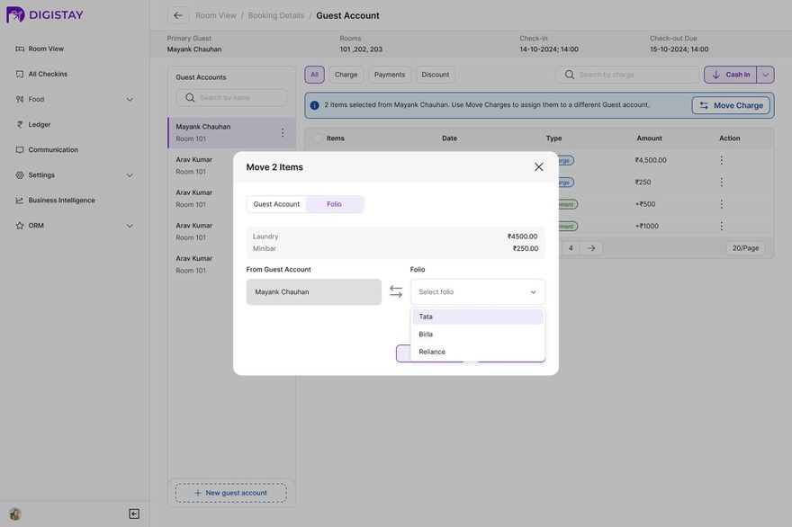
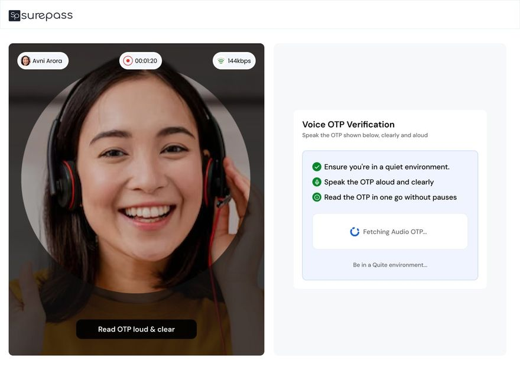
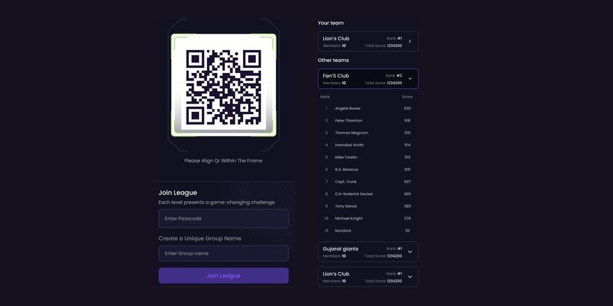

Ask Nitish
the real one replies by email
Payments, verification, permissions, the 2am financial close. I take the complicated middle of a product and make it feel obvious — research to handoff, shipped to production, measured afterwards.
Eight modules, all live. Guest accounts split company and personal charges at the source, so corporate invoices come out clean at checkout instead of rebuilt by hand.
View case study →
One in three people who start a KYC in India never finish it. Face detection gates the flow, then a spoken one-time code proves liveness — a photo can't speak. Live across 20+ clients, built to RBI V-CIP compliance.
View case study →
Every team asked design the same small questions, then waited. I moved 200+ components, tokens and brand rules out of Figma and into eight versioned spec files in the repo teams actually build in. Minor frontend fixes ship as my own PRs.
View case study → ├─ brand.mdthe non-negotiables ├─ components.md200+, prioritised ├─ tokens.mdcolour, type, spacing ├─ grid-spacing.mdthe rhythm ├─ patterns.mdhow screens compose └─ icons.md+ assets/ Read 04 — Reliance FyndAt a live event every signup step loses people. Captains create teams, players scan to join, every score feeds one leaderboard. Usability testing across two apps surfaced 20+ friction points, all fixed with engineering.
View case study →
It's the one a night-shift auditor and a first-day hire can both trust. That's the standard I design to — so if you're building something gnarly and multi-role, I'd love to hear about it.
In a hurry? — the short version of me, in my own words.